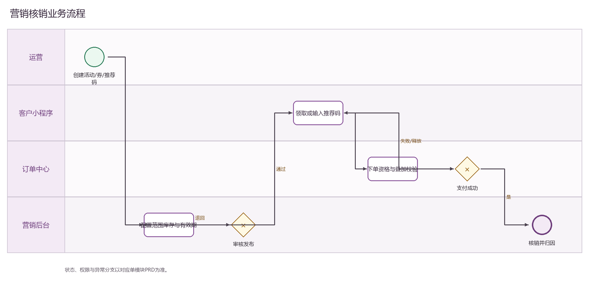

PRODUCT REQUIREMENTS
推荐码管理 PRD
下载 Word 文档推荐码管理 PRD
运营后台研发详细需求规格 · V2.0 · 2026-09-08
1 文档目标与范围
管理推荐人、推荐码、被推荐关系、奖励条件和关联订单。 本文档明确页面字段、操作流程、业务规则、跨端契约、权限和验收条件。
| 属性 | 内容 |
|---|---|
| 文档编号 | OS-OPS-PRD-26 |
| 产品基线 | AiwaBot产品原型 V3.2 与 OneStorage运营后台原型 V1.1 |
| 版本 | V2.0 2026-09-08 |
2 页面结构与查询
2.2 筛选条件
| 筛选项 | 规则 |
|---|---|
| 推荐码或推荐人 | 支持组合查询、重置和返回保留。 |
| 状态 | 支持组合查询、重置和返回保留。 |
| 奖励类型 | 支持组合查询、重置和返回保留。 |
| 创建时间 | 支持组合查询、重置和返回保留。 |
3 列表字段规格
| 字段ID | 字段 | 来源 | 展示与交互规则 |
|---|---|---|---|
| OS-OPS-PRD-26-L01 | 推荐码 | 业务主域 | 详情与导出保持一致；空值显示—，不使用模拟值补齐。 |
| OS-OPS-PRD-26-L02 | 推荐人 | 业务主域 | 详情与导出保持一致；空值显示—，不使用模拟值补齐。 |
| OS-OPS-PRD-26-L03 | 奖励 | 业务主域 | 详情与导出保持一致；空值显示—，不使用模拟值补齐。 |
| OS-OPS-PRD-26-L04 | 已使用 | 业务主域 | 详情与导出保持一致；空值显示—，不使用模拟值补齐。 |
| OS-OPS-PRD-26-L05 | 操作人 | 服务端/关联主数据 | 记录最近一次有效业务操作人员。 |
| OS-OPS-PRD-26-L06 | 更新时间 | 服务端/关联主数据 | 服务器更新时间，格式YYYY-MM-DD HH:mm:ss。 |
| OS-OPS-PRD-26-L07 | 状态 | 服务端/关联主数据 | 以标签显示服务端枚举；不可由前端自行推导。 |
| OS-OPS-PRD-26-L08 | 关联订单 | 服务端/关联主数据 | 显示订单编号并支持在有权限时跳转。 |
| OS-OPS-PRD-26-L09 | 操作 | 服务端/关联主数据 | 根据allowedActions显示查看、编辑及状态动作；后端再次鉴权。 |
4 新增与编辑表单
| 字段ID | 字段 | 控件 | 必填 | 校验与保存规则 |
|---|---|---|---|---|
| OS-OPS-PRD-26-F01 | 推荐人 | 文本框 | 条件必填 | 去除首尾空格；保存原始值与标准化值。 |
| OS-OPS-PRD-26-F02 | 推荐码 | 文本框 | 条件必填 | 去除首尾空格；保存原始值与标准化值。 |
| OS-OPS-PRD-26-F03 | 奖励类型 | 单选或下拉选择 | 必填 | 选项来自服务端字典；提交编码值，界面显示名称。 |
| OS-OPS-PRD-26-F04 | 推荐人奖励 | 文本框 | 条件必填 | 去除首尾空格；保存原始值与标准化值。 |
| OS-OPS-PRD-26-F05 | 被推荐人奖励 | 文本框 | 条件必填 | 去除首尾空格；保存原始值与标准化值。 |
| OS-OPS-PRD-26-F06 | 适用业务 | 文本框 | 条件必填 | 去除首尾空格；保存原始值与标准化值。 |
| OS-OPS-PRD-26-F07 | 有效期 | 文本框 | 条件必填 | 去除首尾空格；保存原始值与标准化值。 |
| OS-OPS-PRD-26-F08 | 使用上限 | 数字输入 | 条件必填 | 仅允许业务配置范围内的整数；服务端再次校验。 |
| OS-OPS-PRD-26-F09 | 每个客户上限 | 数字输入 | 条件必填 | 仅允许业务配置范围内的整数；服务端再次校验。 |
| OS-OPS-PRD-26-F10 | 生效条件 | 文本框 | 条件必填 | 去除首尾空格；保存原始值与标准化值。 |
| OS-OPS-PRD-26-F11 | 发放时点 | 文本框 | 条件必填 | 去除首尾空格；保存原始值与标准化值。 |
| OS-OPS-PRD-26-F12 | 状态 | 单选或下拉选择 | 必填 | 选项来自服务端字典；提交编码值，界面显示名称。 |
| OS-OPS-PRD-26-F13 | 备注 | 多行文本 | 条件必填 | 最多500字；拒绝或异常原因不得只输入空白。 |
5 操作与处理流程
| 操作ID | 操作 | 前置条件与系统处理 | 结果与失败处理 |
|---|---|---|---|
| OS-OPS-PRD-26-A01 | 新增推荐码 | 选择推荐人并生成或校验自定义代码。 | 成功后刷新详情和时间线；失败保留输入并显示错误码。 |
| OS-OPS-PRD-26-A02 | 启用或暂停 | 控制新绑定，不影响已形成关系。 | 成功后刷新详情和时间线；失败保留输入并显示错误码。 |
| OS-OPS-PRD-26-A03 | 记录使用 | 下单时绑定推荐关系并校验自荐和重复。 | 成功后刷新详情和时间线；失败保留输入并显示错误码。 |
| OS-OPS-PRD-26-A04 | 确认奖励 | 满足签约、付款或履约条件后进入发放。 | 成功后刷新详情和时间线；失败保留输入并显示错误码。 |
| OS-OPS-PRD-26-A05 | 查看关联订单 | 展示使用、取消和奖励状态。 | 成功后刷新详情和时间线；失败保留输入并显示错误码。 |
6 状态机与业务规则
| 对象 | 状态流转 |
|---|---|
| 推荐码管理 | 草稿→启用→暂停→失效；使用记录：待满足→已满足→待发放→已发放/已取消 |
| 异步任务 | 待执行→执行中→成功/失败→重试/人工处理 |
| 规则ID | 业务规则 |
|---|---|
| OS-OPS-PRD-26-R01 | 推荐码全局唯一且大小写归一 |
| OS-OPS-PRD-26-R02 | 禁止自荐和循环推荐 |
| OS-OPS-PRD-26-R03 | 同一客户同一活动只能绑定一次 |
| OS-OPS-PRD-26-R04 | 奖励发放幂等 |
| OS-OPS-PRD-26-R05 | 退款或取消按规则撤销未发奖励 |
| OS-OPS-PRD-26-R06 | 所有写请求携带clientRequestId和expectedVersion，重复请求返回首次结果 |
| OS-OPS-PRD-26-R07 | 服务端返回allowedActions，前端仅据此展示按钮，后端仍逐动作鉴权 |
| OS-OPS-PRD-26-R08 | 列表、详情、关联选择器、统计和导出使用同一数据范围 |
| OS-OPS-PRD-26-R09 | 创建、编辑、状态流转、导出、下载和审批均记录操作审计 |
| OS-OPS-PRD-26-R10 | 第三方调用失败不得伪装主业务成功，进入可重试或人工处理状态 |
7 BPMN流程

客户、后台、执行端和领域服务节点必须与状态机一致。
8 跨端交互规则
| 规则ID | 交互规则 |
|---|---|
| OS-OPS-PRD-26-X01 | 客户小程序支持输入或分享推荐码 |
| OS-OPS-PRD-26-X02 | 订单确认前返回推荐资格和奖励预览 |
| OS-OPS-PRD-26-X03 | 奖励状态通过消息通知推荐双方 |
•
客户小程序仅访问本人数据，工单小程序仅访问本人或团队任务
•
深链打开后重新校验身份、权限和最新状态
•
金额、库存、状态和allowedActions必须回源
•
离线重试沿用同一clientRequestId
9 接口与事件契约
| 契约 | 路径或事件 | 要求 |
|---|---|---|
| 列表 | GET /ops/v1/referrals | 分页、排序、筛选、数据范围和脱敏 |
| 详情 | GET /ops/v1/referrals/{id} | version、关联对象、时间线和allowedActions |
| 新增 | POST /ops/v1/referrals | clientRequestId幂等 |
| 编辑 | PATCH /ops/v1/referrals/{id} | expectedVersion并发控制 |
| 动作 | POST /ops/v1/referrals/{id}/actions/{action} | 动作级权限和状态前置 |
| 事件 | 推荐码管理.Changed.v1 | eventId、aggregateId、version和occurredAt |
10 异常与边界处理
| 场景 | 处理 |
|---|---|
| 400字段错误 | 字段级提示并保留输入 |
| 403无权限 | 拒绝并记录审计 |
| 404不存在 | 不泄露额外对象信息 |
| 409版本冲突 | 刷新后重新操作 |
| 重复请求 | 返回首次幂等结果 |
| 第三方失败 | 进入重试或人工处理 |
11 验收标准
| 验收ID | 验收条件 |
|---|---|
| OS-OPS-PRD-26-AC01 | 列表字段、筛选、分页、排序和导出一致 |
| OS-OPS-PRD-26-AC02 | 表单字段、必填和跨字段校验完整 |
| OS-OPS-PRD-26-AC03 | 所有动作同时校验权限、数据范围和状态 |
| OS-OPS-PRD-26-AC04 | 重复请求无重复记录或副作用 |
| OS-OPS-PRD-26-AC05 | 跨端编号、状态、金额和时间一致 |
| OS-OPS-PRD-26-AC06 | 异常和空数据有明确反馈 |
| OS-OPS-PRD-26-AC07 | 敏感字段按权限脱敏并审计 |
| OS-OPS-PRD-26-AC08 | P0规则具有自动化测试 |